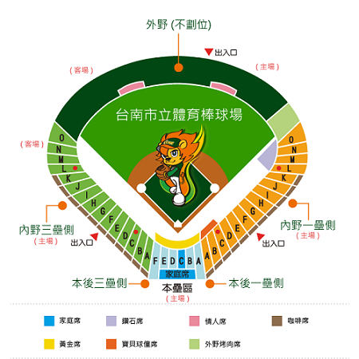

台南市立棒球場 |
|
| 簡介 | |
| 唯一可以稱得上最有主場特性的球場就是台南球場。府城自從前便一直是台灣棒球發展的重鎮，許多好手都是出身於台南，所以府城球迷一向與棒球運動相當投緣。於市區內的台南球場交通便利，可供停車與用餐之處很多，每逢職棒比賽，就會呈現出一副熱鬧的景象。 2015年統一獅將擁有八十餘年的台南棒球場，投資近千萬美化改造，其中包括外觀重新粉刷，一壘側棒球藝術大道結合府城古都文化特色，繪製充滿府城特色Q版插畫，其中包括台南棒球場、孔廟、民生綠園、台南氣象局等街道巷弄特色圖案，成為球迷拍照最佳景點。 另外，也結合台灣金屬創意館，充分運用鋼鐵打造萊恩獅椅子、萊恩金鋼、蝴蝶座椅，也成為台南棒球場新地標，並在在台南棒球場牆面結合3D彩繪創作，讓台南棒球場成為全新風貌。 |
|
| 場內座位資訊 | |
|  | |
| 觀眾數：11,000 席 / 內野數：5,000 席 / 外野數：6,000 席 / 內野：草皮 右外野：320 英呎 / 左外野：320 英呎 / 中外野：400 英呎 / 大螢幕：有 |
|
| 交通資訊 | |
| 火車 | 西部縱貫鐵路台南火車站，站前有計程車及公車可供搭乘。 |
| 台南市公車 | 0左 、 0右 、 5 、 88 、 8046（體育公園）； 2路(南門路站)；15路(勞工中心站)。 |
| 接駁車訊息 | 【統一獅定點直達棒球接駁車資訊】 發車時間： 週二～週五(非假日)：第一班 16：30~最後一班18：30，每15分鐘一班車 週六～週日(假日)：第一班 15：00~最後一班17：00，每15分鐘一班車 接駁路線： 台南市公11停車場(上車地點：忠義國小校門口對面)→台南市棒球場 台南火車站(上車地點：火車站圓環右前方)→台南市棒球場 備註：非比賽日接駁車不行駛 |
| 自行開車 | 中山高速公路台南交流道，取東門路直行、於林森路左轉、直行過地下道後接健康路一段直行後於慶中街口即到。 |
| 停車資訊 | 球場週邊無大型停車場，均為路邊計費停車格。台南市公11停車場有近800個停車位，球隊也有安排接駁專車，球迷朋友可多加利用。 |